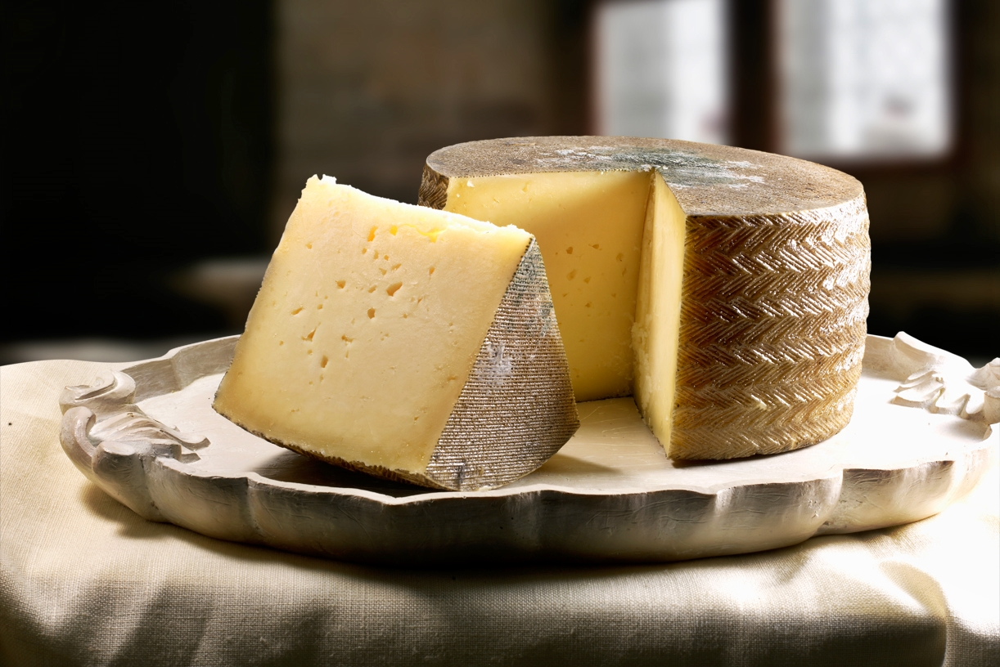

Nuestros Productos
Queso Manchego
Queso manchego: queso español de leche de oveja manchega, con sabor intenso y textura firme, emblema gastronómico de La Mancha.
Precio $30.000
Queso Azul

Queso azul: queso de leche de vaca, con vetas de moho natural, sabor intenso y salado, y aroma potente y característico.
Precio $35.000
Queso Cheddar

Queso cheddar: queso inglés de leche de vaca, color dorado o naranja, sabor suave a intenso y textura firme, ideal para fundir o degustar solo.
Precio $28.000
Queso de Cabra

Queso de cabra: queso de sabor ácido y aroma intenso, textura cremosa y blanca, bajo en lactosa y fácil de digerir, ideal para paladares gourmet.